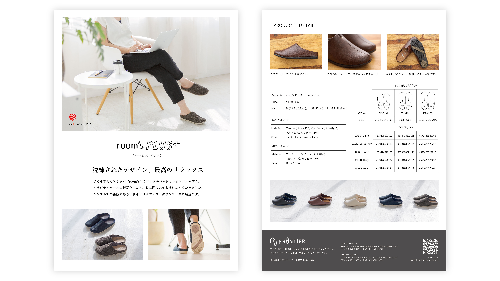

オフィスでの履き替え用サンダルのB5商品カタログ。ファッション性が高い商材を卸先や小売に案内するtoB向けのカタログ。
担当
デザイン
使用ツール
Illustrator/Photoshop
目的
商品イメージや商品詳細を知らせるための販促カタログ
ターゲット
雑貨屋さんやインテリアショップなどの卸バイヤーや小売。
デザインについて
新生活時期でもあったので、清潔感のある白を基調としたテイストにしました。オフィスシーンでの履き替えをコンセプトとしてるので、仕事風景を想起させるイメージを使用しています。類似の室内用商品と初見の印象を分けるため、室外用限定のメッシュタイプをメインに置きました。
合皮タイプとメッシュタイプの２種類5展開がややこしい点であるので、全てが並んでる写真を置いて少しでも違いがわかるように気をつけました。
フォーマルにもカジュアルにも合わせやすく、軽く履きやすいのでオフィスで一足は欲しい商品です。その自分で履いた感想を乗せられるよう制作しました。